long · task_index=5
put both the alphabet soup and the tomato sauce in the basket
α_event rank 12/12 (low)
α=0.290 α_event=0.260 G=0 · ep=317 frame=1

α_event rank 1/12 (high)
α=1.312 α_event=2.070 G=1 · ep=13 frame=262
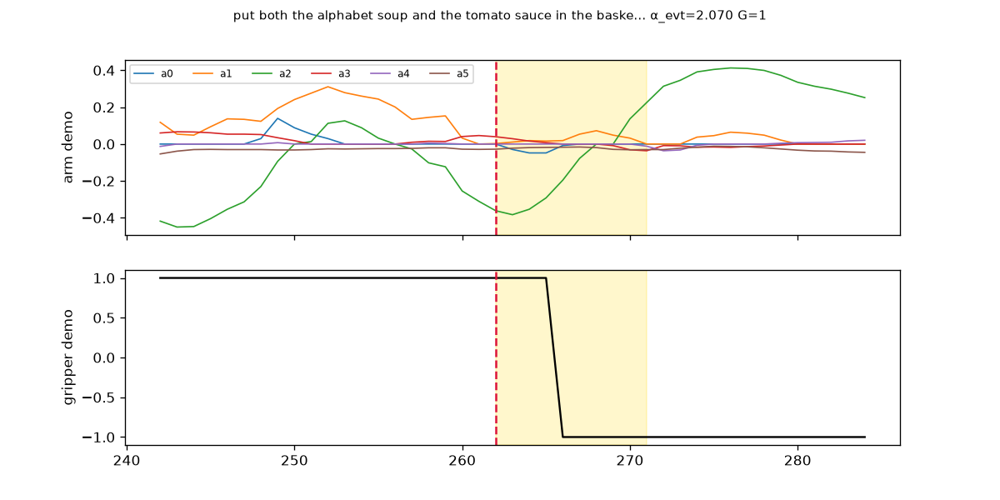
Sorted by α_event = (α + 1.0·G) / mean(α+G) within each task_index pool (global mean over 480 frames).
turn on the stove and put the moka pot on it
α=0.319 α_event=0.286 G=0 · ep=153 frame=219
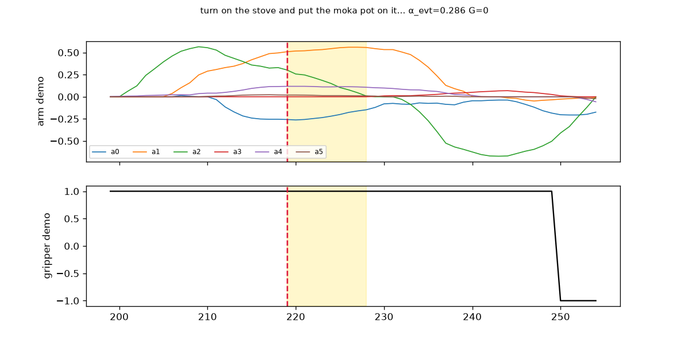
α=1.015 α_event=1.804 G=1 · ep=40 frame=167
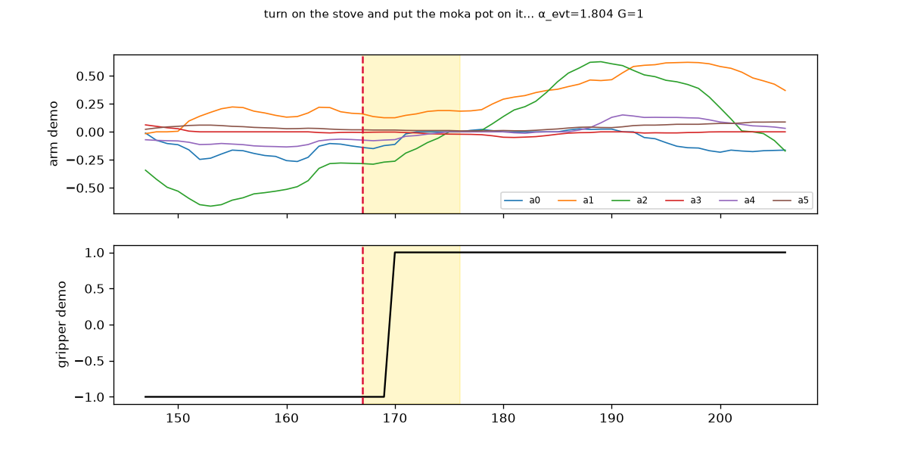
put both the alphabet soup and the tomato sauce in the basket
α=0.290 α_event=0.260 G=0 · ep=317 frame=1
α=1.312 α_event=2.070 G=1 · ep=13 frame=262

put the bowl on the plate
α=0.460 α_event=0.412 G=0 · ep=607 frame=9
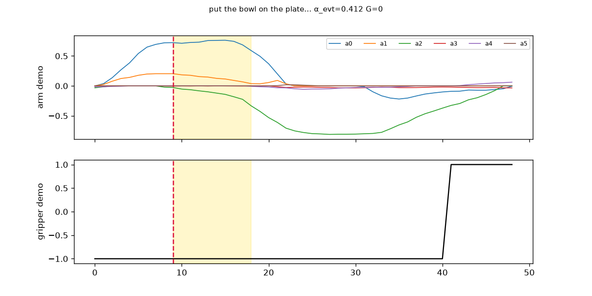
α=1.764 α_event=2.476 G=1 · ep=447 frame=67
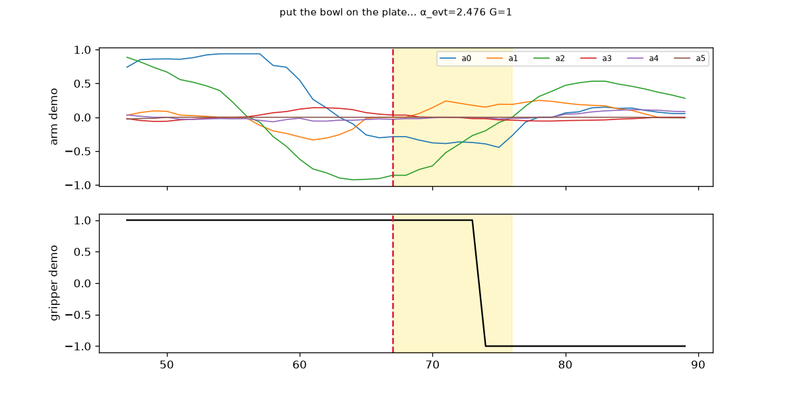
turn on the stove
α=0.246 α_event=0.220 G=0 · ep=569 frame=62
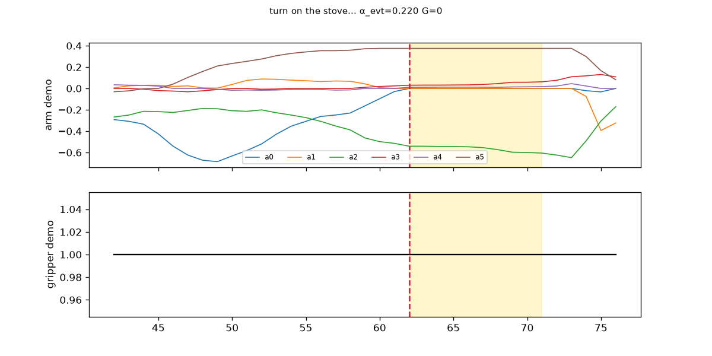
α=3.227 α_event=2.890 G=0 · ep=567 frame=54
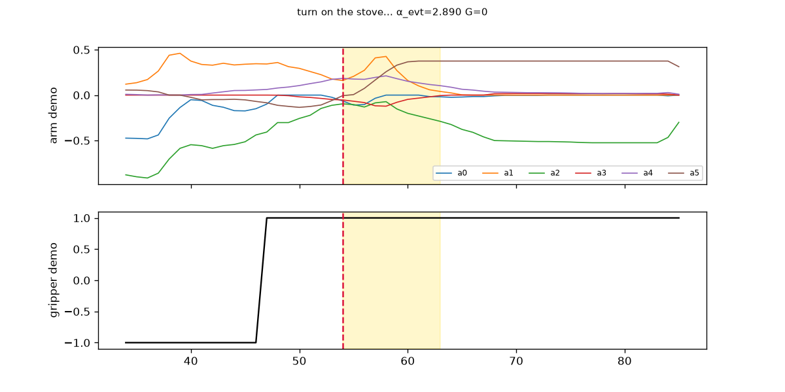
pick up the alphabet soup and place it in the basket
α=0.214 α_event=0.192 G=0 · ep=945 frame=100

α=1.257 α_event=2.021 G=1 · ep=813 frame=47
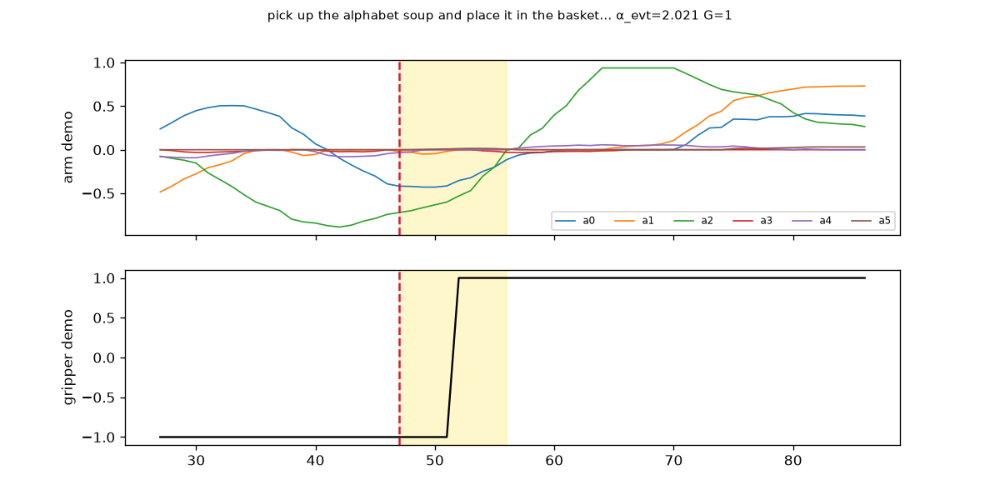
pick up the tomato sauce and place it in the basket
α=0.122 α_event=0.110 G=0 · ep=864 frame=80
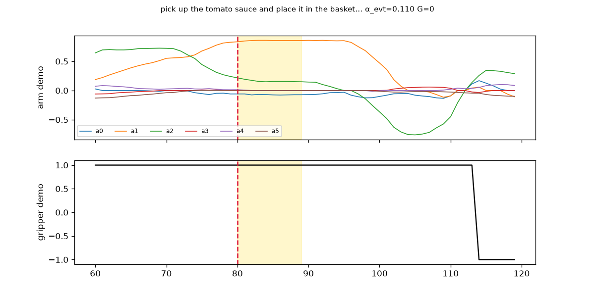
α=1.592 α_event=2.321 G=1 · ep=904 frame=118
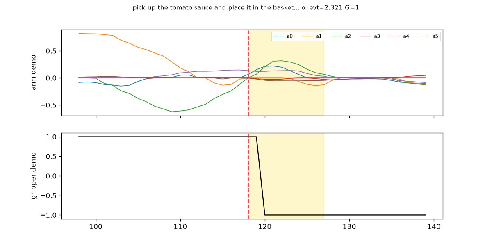
pick up the black bowl between the plate and the ramekin and place it on
α=0.867 α_event=0.777 G=0 · ep=1597 frame=26
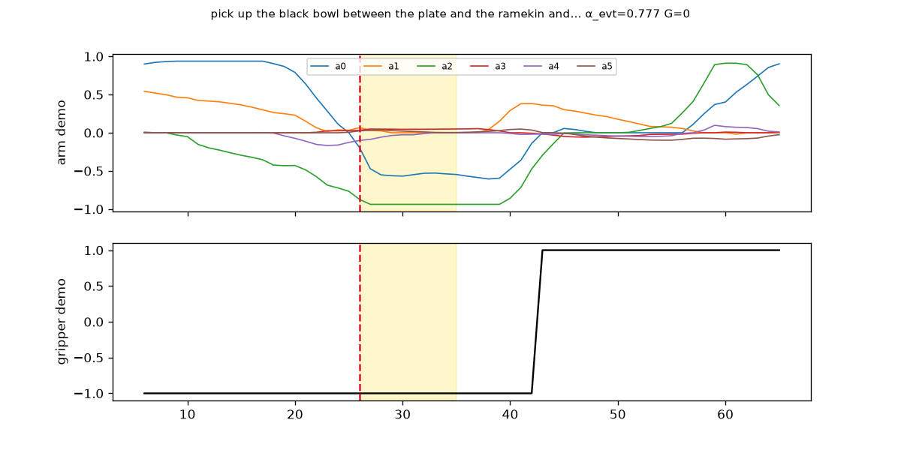
α=3.099 α_event=3.671 G=1 · ep=1275 frame=106
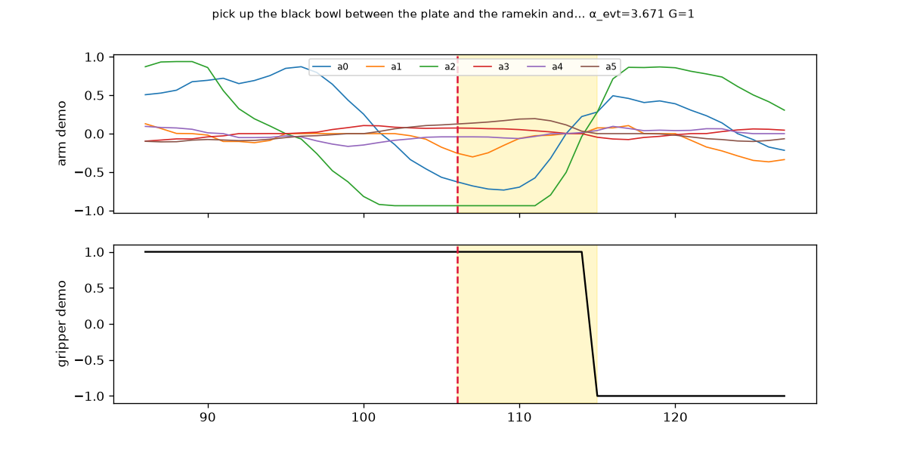
pick up the black bowl next to the ramekin and place it on the plate
α=0.242 α_event=0.217 G=0 · ep=1490 frame=125
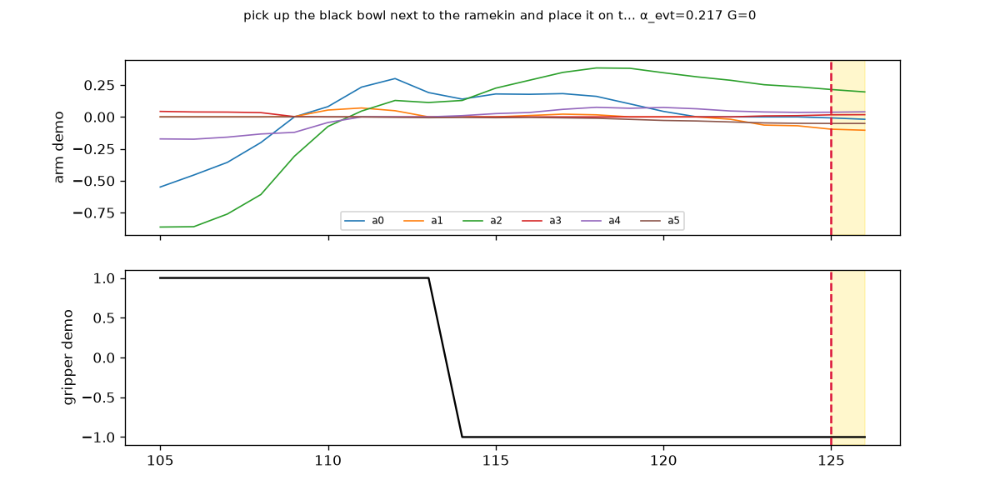
α=2.573 α_event=3.200 G=1 · ep=1294 frame=107
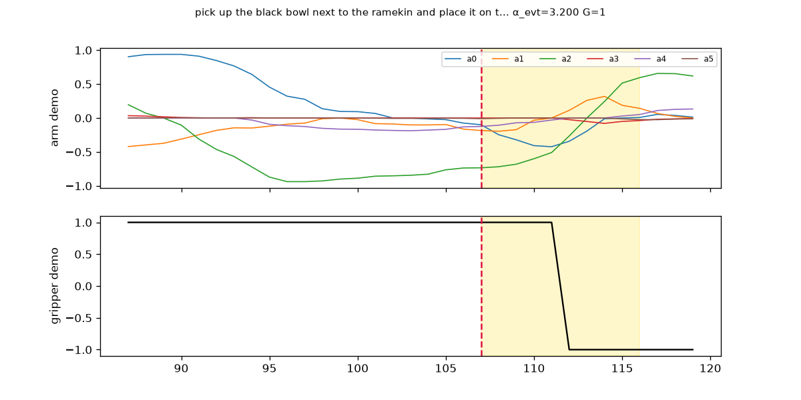